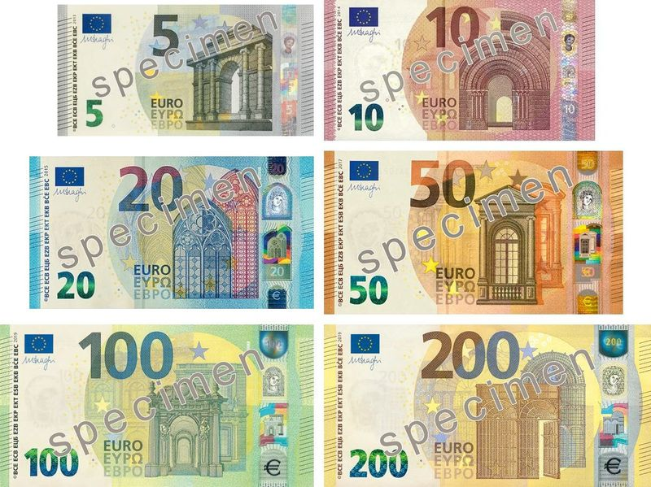

미 인플레 충격에 유럽 증시 일제히 하락
미국의 5월 소비자물가가 예상을 웃돌자 유럽 주요 증시가 일제히 하락했다. 에너지발 인플레이션이 금리 인하 기대를 후퇴시킨 영향이다.
유선경 기자 · 2026.06.11
橋국제

자유시보에 따르면 미 CPI 발표 직후 유럽 주요 지수가 대체로 약세로 마감했다. 금리 인하 시점이 늦춰질 수 있다는 우려가 매물을 불렀다.
광고 문의 · 300×250미국 물가의 재반등은 연준뿐 아니라 유럽중앙은행(ECB)의 정책 경로에도 영향을 준다. 에너지 가격 상승은 유럽의 수입물가를 직접 자극하는 요인이다.
중동 긴장이 진정되지 않는 한 에너지발 물가 변동성은 이어질 전망이다. 증시는 당분간 유가·물가 지표에 민감하게 반응하는 장세가 예상된다.
유럽 증시의 흐름은 글로벌 자금 이동을 통해 한국·아시아 시장에도 영향을 준다. 華橋時報는 시장 동향을 사실 중심으로 전하며, 투자 판단은 독자의 몫이다.
출처·참고 (사실 확인용 — 본문은 직접 재작성)
· 自由時報
· 自由時報